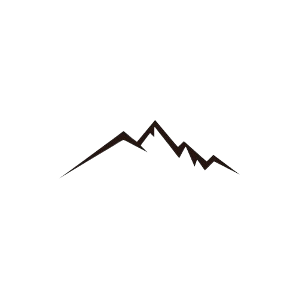

The Rara Lake Trek is a mesmerizing journey into the remote and pristine wilderness of Western Nepal, offering trekkers a chance to explore the breathtaking beauty of Rara Lake, the largest lake in Nepal and one of the highest lakes in the world at an altitude of approximately 2,990 meters (9,810 feet) above sea level. This trek is a hidden gem, perfect for adventurers seeking tranquility and untouched natural beauty. The Rara Lake Trek offers a truly unique and unforgettable experience for those seeking to explore the remote and untouched beauty of the Himalayas. With its stunning landscapes, serene atmosphere, and abundant wildlife, it is sure to captivate the hearts of trekkers and nature lovers alike.
Rara Lake Trek

Location
Jumla/Mugu,Nepal

Accomodation
Hotels, Lodges

Grade
Challenging

Duration
16-17 days

Daily activity
6-7 hrs

Max-altitude
2,990 m

Best time
Spring, Autumn

Transportation
Flight, Jeep
Your Daily Schedule
* Day 01
ARRIVE IN KATHMANDU, All trekkers need to organise their own flights to Kathmandu International Airport (KTM). From Kathmandu Airport we will arrange a private transfer to your hotel. That night you will meet your local Kandoo representative and have a full pre-trek briefing.
* Day 02
Half day sightseeing tour of Kathmandu. Hotel Accommodation.
* Day 04
Fly from Kathmandu to Nepalgunj (150 m/490 ft) 1 hr, Hotel Accommodation.
* Day 05
Fly from Nepalgunj to Jumla (2,540 m/8,334 ft) 20 minutes, Tea House Accommodation.
* Day 06
Trek from Jumla to Chere Chaur (3055 m/10,023 ft) Tea House Accommodation
* Day 07
Chere Chaur to Chalachaur (2980 m/9,777 ft) 5-6 hrs, Tea House Accommodation.
* Day 08
Chalachaur to Sinja Valley (2490 m/ 8167 ft) Tea House Accommodation.
* Day 09
Sinja to Ghorosingha (3050 m/10007 ft) Tea House Accommodation.
* Day 10
Ghorosingha to Rara Lake (3010 m/9876 ft) 6-7 hrs, Tea House Accommodation.
* Day 11
Explore Rara Lake to explore the beauty of the lake and backdrop of the lake, communicate with the local people and learn their culture and ethnicity in detail. Tea House Accommodation.
* Day 12
Rara Lake to Pina (2440 m/ 8006 ft) 4-5 hrs, Tea House Accommodation.
* Day 13
Trek ends: Bumra to Jumla (2540 m/8334 ft) 5-6 hrs, Tea House Accommodation.
* Day 14
Fly to Nepalgunj, Fly to Kathmandu, Hotel Accommodation.
* Day 15
Final departure
Included
* Arrival & Departure: Airport - Hotel transfers – Airport (Pick Up and Drop)
* Hotel Accommodation in Kathmandu: 4 nights hotel in Kathmandu on bed & breakfast Basis- Twin Bedroom
* Welcome Dinner: One Welcome Dinner in Kathmandu with the Office’s Staffs
* Permit: All necessary paper works: Rara Conservation Area permits, TIMS permit & conservation entry fee
* Insurance: Insurance for all involved Nepalese staffs during
* Trekking Map: Rara Lake Trekking map
* Member Luggage: Up to 15 Kg per member for personal baggage during the trek carrying by porters
* Lodging & Food: Food 3 meals a day (BDL; including tea and coffee) along with accessible accommodation at Hotel/Lodge during the trek
* Porter: Porters (2 trekkers: 1 porter) during the trek
* Staff Salary and allowance
* Comprehensive Medical kit
Not-included
* Air Fare: International flight fare (to/from Kathmandu) Personal transportation beyond the aforementioned programs
* Nepal entry Visa fee
* Lunch & Dinner: Lunch & dinner in during the stay in Kathmandu (also in case of early return from Trekking than the scheduled itinerary)
* Extra night in Kathmandu: Extra nights’ accommodation in Kathmandu. In case of early arrival or late departure, early return from Trekking (due to any reason) than the scheduled itinerary
* Rescue Evacuation: Medical Insurance and emergency rescue evacuation cost if required. (Rescue, Repatriation, Medication, Medical Tests and Hospitalization costs.)
* Personal Expenses: Telephone, Internet, battery recharge, shower, Laundry, any Alcoholic beverages, Boiled water, beer, coke, and Clothing, Packing Items or Bags, Personal Medical Kit, Insurance, Personal Trekking Gears & Equipment
* $50 USD for extra porter per day (If extra porter demanded)
* Tips: Tips for Guide, porters and staffs
* Note: At times Climbers have been delayed in Lukla awaiting return to KTM. During these times when Airplane cannot fly, Helicopter flight can be arranged (subject to their availability). The cost is approximately $400 paid by the trekker
* Any other item not listed in “Price Includes” section